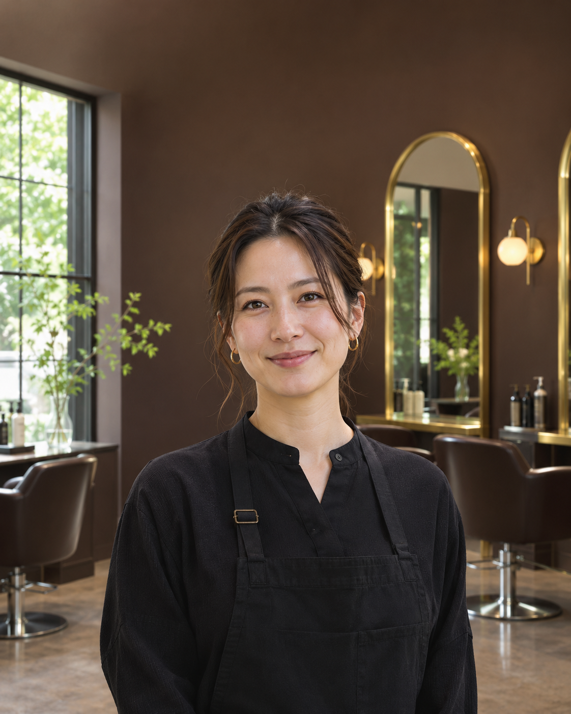

Анна
Женские стрижки и укладки
Помогает найти форму, которую легко носить каждый день. Учитывает густоту волос, привычный пробор и время, которое вы готовы тратить на укладку.
Работает с: стрижками, чёлкой и укладками.
Смотреть женские услуги →